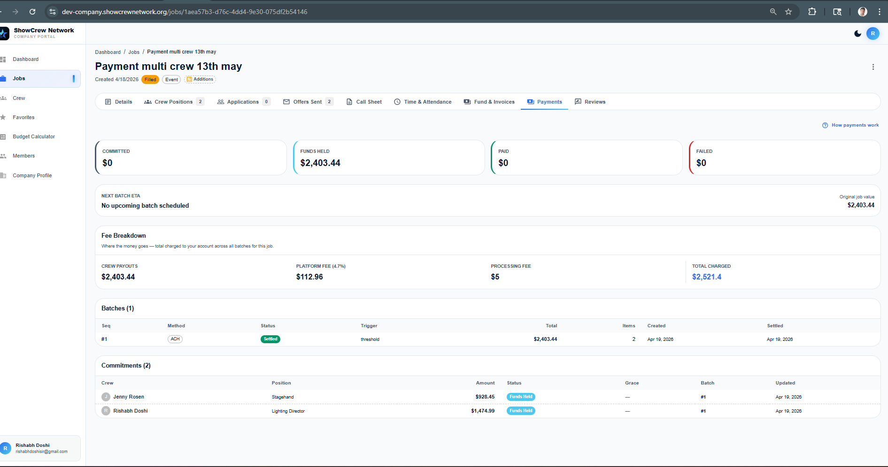
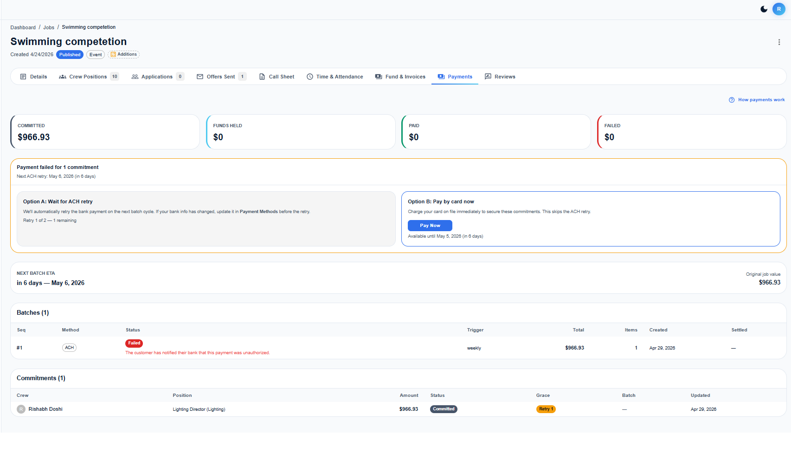
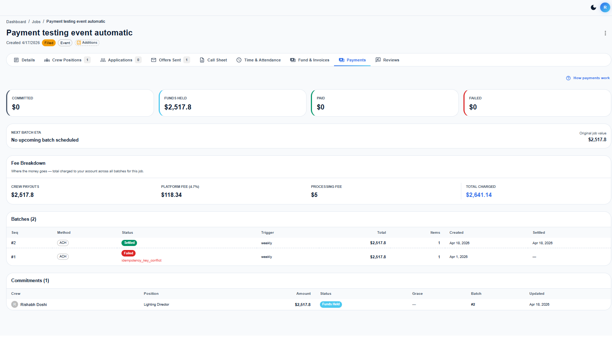
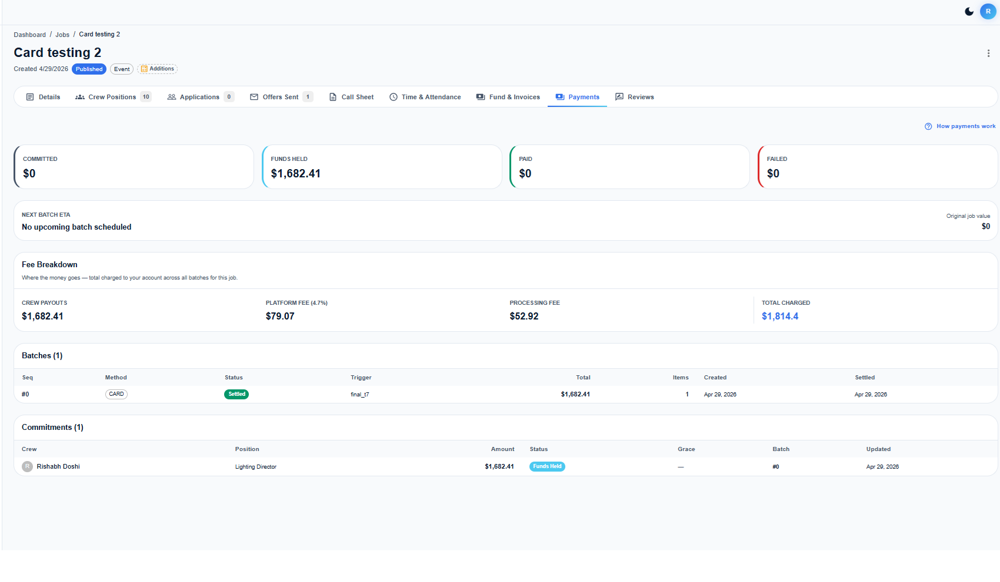
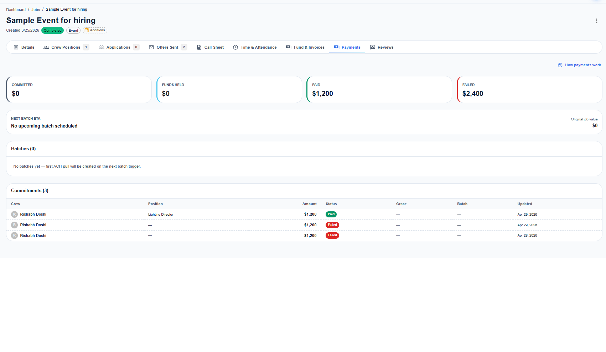
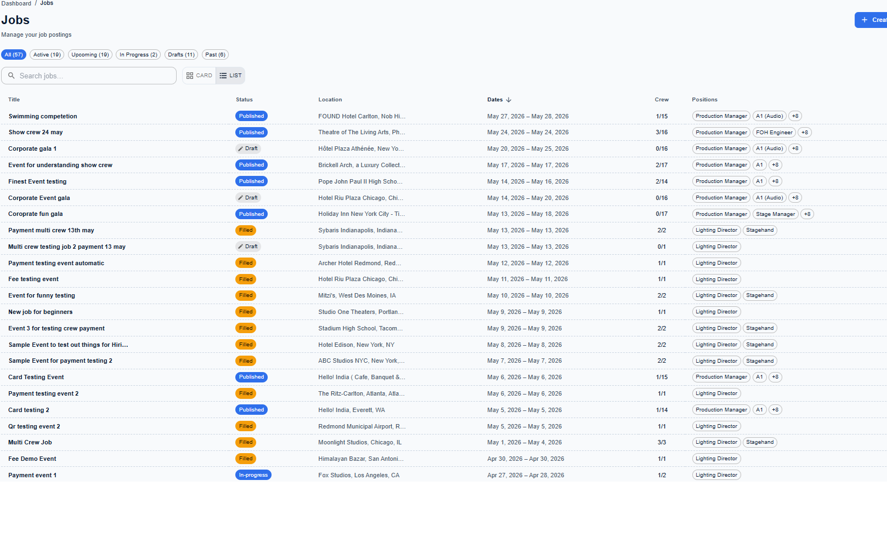
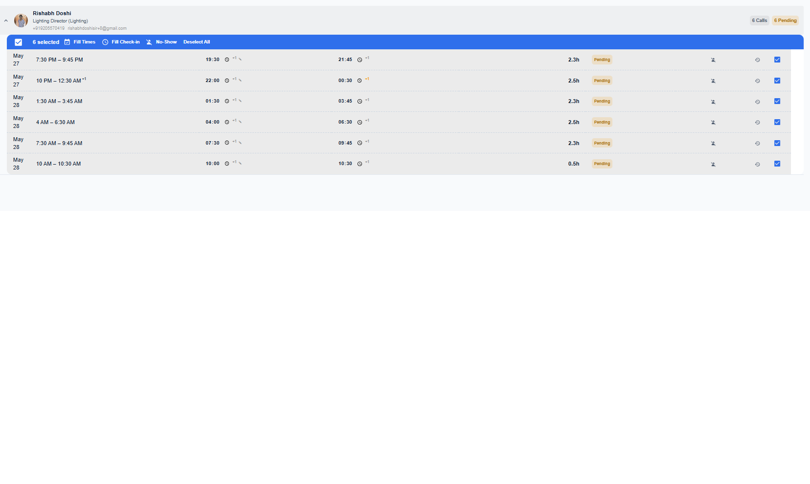
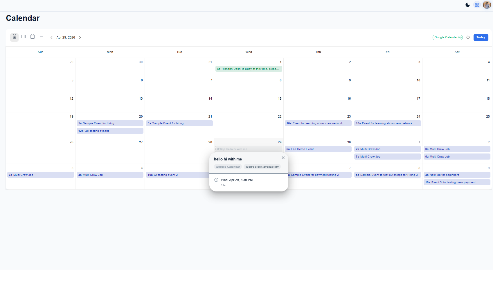

Payment Flows — How money moves from Company to Crew
SCN uses a commitment-based payment system. When a company hires crew, funds are charged to the company's bank account (ACH) or card and held in a holding account until the job is complete. Crew is paid out 7 days after the event ends.
| Status | Meaning | What's Happening |
|---|---|---|
| committed | Hire accepted | Crew is booked, payment not yet batched |
| batch_initiated | In a batch | PaymentIntent created, Stripe is processing |
| escrow_pending | Awaiting settlement | ACH in transit, typically 3–5 business days |
| escrow_reserved | Funds held | Money confirmed in holding account |
| payout_pending | Ready to pay crew | Job completed, waiting for 7-day release window |
| paid | Crew paid | Stripe transfer sent to crew's connected account |
application_fee_amount
retryCount + 1retry-{commitmentId}-{attempt} prevents double-charges


committedfinal_t7)retryCount > 0 + daysToEvent < 7stripeCardPaymentMethodId off-session| Day | Event | Status | Action |
|---|---|---|---|
| T-14 | Crew hired, batch 1 created | batch_initiated | ACH PaymentIntent created |
| T-11 | ACH failure webhook | failed | 24h grace window opens, admin notified |
| T-10 | Grace expires, no manual pay | committed | Reset to committed, retryCount = 1 |
| T-7 | final_t7 batch triggers | batch_initiated | ACH retry #2 (still within NACHA limit) |
| T-5 | ACH fails again | failed | Auto card fallback — card charged immediately |
| T-5 | Card succeeds ✅ | escrow_reserved | Funds secured, crew hire confirmed |
| T+0 | Event day | escrow_reserved | Crew works, times recorded |
| T+7 | Payout day | paid | Stripe transfer to crew connected account |
At any point between batches, companies can use their backup card to make one-off payments. This is available during ACH grace windows and for supplemental invoices after time reconciliation.
Every payment includes a platform fee plus Stripe processing. Fees are "grossed up" so the crew receives their full rate.
chargeAmount = (crewTotal + platformFee + $0.30) / (1 − 0.029)| Scenario | Payment Method | Processing Fee | Settlement | When It Happens |
|---|---|---|---|---|
| Flow 1: Happy Path | ACH | 0.8% (max $5) | 3–5 business days | Most jobs — everything works on first try |
| Flow 2: ACH Retry | ACH → ACH | 0.8% (max $5) | +3–5 days per attempt | Insufficient funds, bank processing delays |
| Flow 3: Card Immediate | Card | 2.9% + $0.30 | Instant | Hire within 7 days of event |
| Flow 4: Full Escalation | ACH → ACH → Card | 2.9% + $0.30 (final) | Instant (card) | ACH fails twice + event approaching |
Live screenshots from the SCN platform showing each payment flow in action.

photos/ folder:
showcrewpayment-happybefore7.png — Flow 1: ACH happy path, funds heldshowcrewpaymentfailed-ACH.png — Flow 2: ACH failure with Option A/Bshowcrewpayment-happyafter1failed.png — Flow 2: ACH retry succeededImmediate-CardHeldBefore7Days.png — Flow 3: Card immediate (T-7)showcrewnetworkpayment-CrewPaidOut.png — End state: Crew paid outcard (not accidentally a bank account)New UI features shipped this sprint to improve the company portal experience.


transparency: transparent or eventType: focusTime/outOfOffice are auto-detected